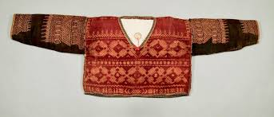
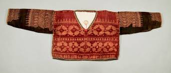

Biography:
Fernando Amorsolo y Cueto (May 30, 1892 – April 24, 1972) was a portraitist and painter of rural Philippine landscapes. Nicknamed the "Grand Old Man of Philippine Art," he was the first-ever to be recognized as a National Artist of the Philippines. He was recognized as such for his "pioneering use of impressionistic technique" as well as his skill in the use of lighting and backlighting in his paintings, "significant not only in the development of Philippine art but also in the formation of Filipino notions of self and identity."
Artistic Contributions:
Amorsolo's major works, such as Maiden in a Stream (1921), The Conversion of the Filipinos (1931), The Bombing of Intendencia (1942), The Rape of Manila (1942), Defense of a Filipina Woman's Honor (1945), and Sunday Morning Going to Town (1958), relate to distinct events in Philippine history. Amorsolo is best known for his illuminated landscapes, which often portrayed traditional Filipino customs, culture, fiestas and occupations. His pastoral works presented "an imagined sense of nationhood in counterpoint to American colonial rule" and were important to the formation of Filipino national identity.
Legacy:
He received numerous distinctions including a first prize at the New York’s World Fair for Afternoon Meal of Rice Workers (1929), an UNESCO gold medal of recognition (1959), the Rizal Pro-Patria Award (1961), the Araw ng Maynila award (1963), and then four days after his death, Amorsolo was posthumously honored as the first National Artist of the Philippines at the Cultural Center of the Philippines. The volume of paintings, sketches, and studies of Amorsolo is believed to have reached more than 10,000 pieces.
Fernado Amorsolo’s Artwork:
1.Untitled (Sunday Morning Going to Town), 1942.
2.Bombing of the Intendencia(1942)
3.The Rape of Manila (1942)
4.Las Lavanderas(1956)
5.Maiden by a Stream(1961)


 
